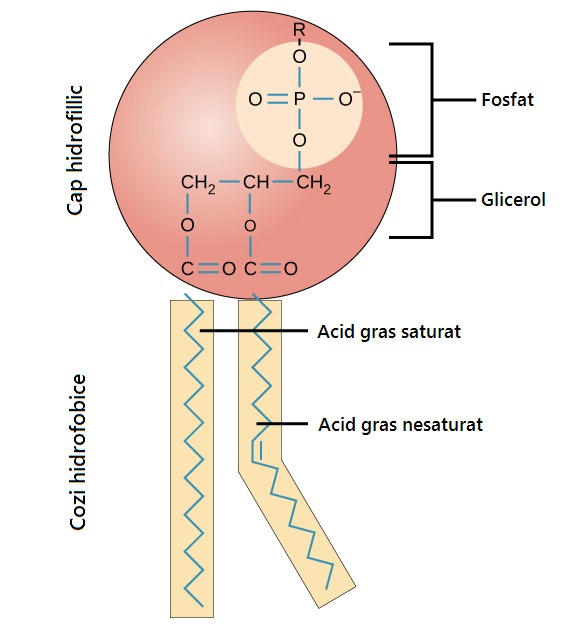
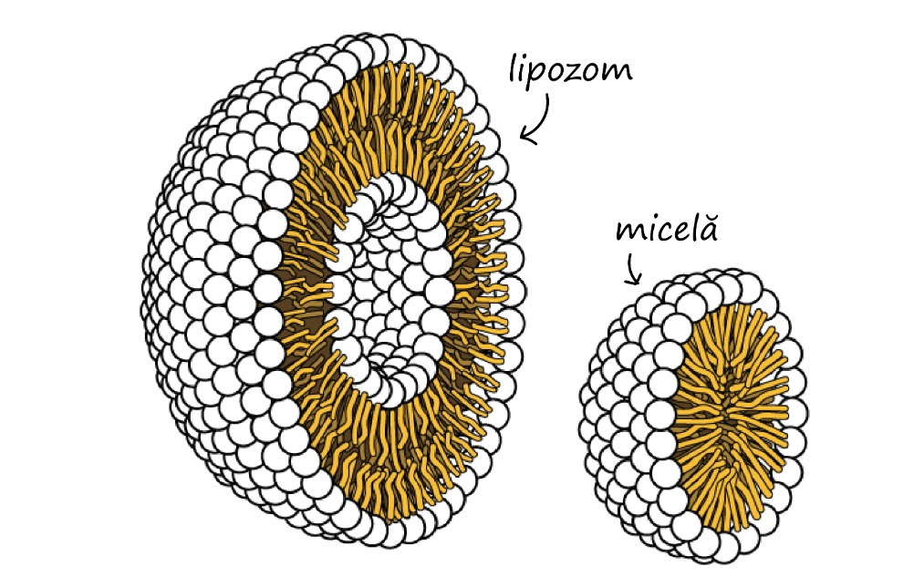
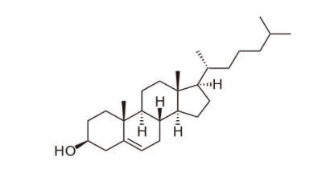
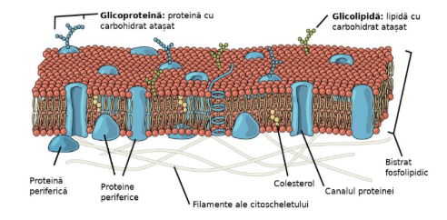
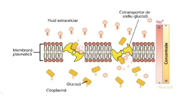
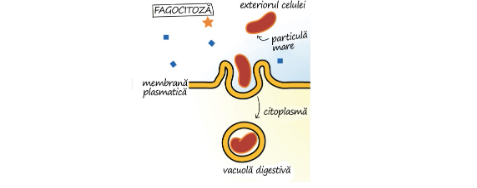
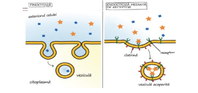
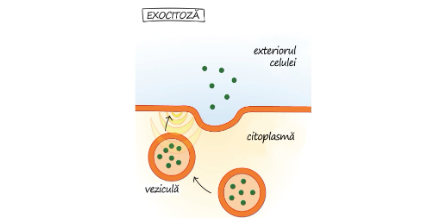

Membrana celulară, cunoscută și sub denumirea de membrană plasmatică, este o structură complexă și delicată, formată din două straturi de fosfolipide, aranjate într-un mod specific denumit „bicelular lipidic". Aceste lipide au capete hidrofile (care iubesc apa) orientate spre exterior și cozi hidrofobe (care resping apa) îndreptate spre interior. Între aceste straturi se găsesc proteine integrale și periferice, care îndeplinesc roluri esențiale, precum transportul activ și pasiv al moleculelor, semnalizarea celulară și recunoașterea intercelulară. Acest aranjament oferă membranei nu doar o barieră fizică, ci și capacitatea de a controla cu precizie ce substanțe pot intra sau ieși din celulă, precum nutrienți, ioni, și produse reziduale.
Citoplasma unei celule eucariote este un mediu foarte organizat. Aceasta include:
• Citosolul – un lichid vâscos, gelatinos, alcătuit în principal din apă, în care sunt dizolvate ioni precum potasiu și sodiu, proteine, și macromolecule necesare pentru funcționarea celulară.
• Organite specializate – cum ar fi mitocondriile, care produc energie, reticulul endoplasmatic, care sintetizează proteinele și lipidele, și complexul Golgi, responsabil de procesarea și transportul substanțelor.
• Citoscheletul – o rețea complexă de fibre proteice (microfilamente, microtubuli și filamente intermediare) care oferă sprijin structural, determină forma celulei și facilitează mișcarea organitelor și moleculelor în interiorul acesteia.
Membrana Celulară
Membrana celulară, prezentă atât la celulele procariote, cât și la cele eucariote, este un strat dublu de lipide care delimitează interiorul celulei de mediul extern. Această structură este formată în principal din fosfolipide, un tip de lipide specializate.
Un fosfolipid are o structură distinctă, compusă dintr-un cap fosfat, care este hidrofilic (atrage apa), și două cozi formate din acizi grași, care sunt hidrofobe (resping apa). Fosfolipidele se organizează spontan într-o structură bilamelară, în care cozile hidrofobe sunt orientate spre interior, departe de apă, iar capetele hidrofile sunt îndreptate spre exterior, spre mediile apoase. Această organizare, cunoscută sub denumirea de bistrat fosfolipidic, este stabilă din punct de vedere energetic și reprezintă baza structurii majorității membranelor biologice.
Modelul mozaicului fluid
Modelul mozaicului fluid, propus pentru prima dată în 1972, este standardul actual pentru explicarea structurii și comportamentului membranei plasmatice. Acest model oferă o descriere accesibilă și precisă pentru organizarea și dinamica membranelor din diferite tipuri de celule.
Conform acestui model, membrana plasmatică este alcătuită dintr-un „mozaic" de componente — fosfolipide, colesterol și proteine — care se mișcă liber într-un mediu fluid. Această organizare flexibilă permite componentele să își schimbe poziția în mod continuu, proces reflectat doar parțial de reprezentările grafice statice ale membranei. De fapt, fosfolipidele și proteinele glisează constant unele pe lângă celelalte, adaptându-se la necesitățile celulei.
Un aspect fascinant al fluidității membranei este capacitatea acesteia de a se adapta la intruziuni. Dacă un ac foarte subțire pătrunde în membrană, aceasta își face loc în jurul acului, iar după ce este îndepărtat, structura membranei revine la forma inițială, fără deteriorări permanente sau modificări semnificative. Această flexibilitate și reziliență sunt caracteristici esențiale pentru funcționarea eficientă a celulelor.
Componentele membranei celulare:
Membrana plasmatică este compusă din trei componente principale: lipide (fosfolipide și colesterol), proteine și grupări de carbohidrați atașate unor lipide sau proteine.
Fosfolipidele sunt molecule alcătuite din glicerol, două cozi de acizi grași și o grupare fosfat. Acestea formează structura de bază a membranei prin organizarea în două straturi, cu cozile hidrofobe orientate spre interior și capetele hidrofile spre exterior.
Fosfolipide
Fosfolipidele, aranjate într-un bistrat, formează materialul de bază al membranei plasmatice. Acestea sunt adaptate acestui rol, deoarece sunt amfipatice, adică au atât regiuni hidrofile, cât și regiuni hidrofobe.

Porțiunea hidrofilă, adică „iubitoare de apă", a fosfolipidelor este reprezentată de capul acestora, care conține o grupare fosfat încărcată negativ și o grupare mică, denumită „R" (a cărei identitate poate varia), ce poate fi polară sau cu sarcină electrică. Acești capi hidrofili sunt orientați către exteriorul bistratului fosfolipidic, în contact direct cu mediul apos din interiorul și exteriorul celulei. Datorită naturii polare a apei, aceasta formează interacțiuni electrostatice eficiente cu capetele hidrofile ale fosfolipidelor.
Partea hidrofobă, sau „care evită apa", a fosfolipidelor este alcătuită din două cozi lungi de acizi grași nepolari. Aceste cozi interacționează bine cu moleculele nepolare, însă sunt incompatibile cu apa. Din acest motiv, fosfolipidele tind să își poziționeze cozile hidrofobe către interiorul membranei, departe de apă, creând o structură bilamelară stabilă din punct de vedere energetic. Această organizare formează o barieră eficientă între mediul intern și extern al celulei, împiedicând trecerea liberă a apei și a substanțelor polare sau cu sarcină electrică prin centrul hidrofob al membranei.
Fosfolipidele, datorită naturii lor amfipatice, nu doar că sunt ideale pentru formarea bistratului lipidic al membranei celulare, ci realizează acest proces spontan atunci când condițiile sunt favorabile. În prezența apei sau a soluțiilor lichide, aceste molecule se aranjează astfel încât cozile lor hidrofobe să fie orientate una spre cealaltă, în timp ce capetele hidrofile sunt îndreptate spre exterior, în contact cu mediul apos.
Dacă fosfolipidele au cozi mai scurte, ele pot forma MICELE – structuri sferice simple, cu un singur strat lipidic. În schimb, fosfolipidele cu cozi mai lungi se organizează în LIPOZOMI, structuri sferice mai complexe, care conțin un interior gol și sunt delimitate de un dublu strat lipidic. Aceste proprietăți unice le permit fosfolipidelor să creeze bariere eficiente și dinamice, esențiale pentru funcționarea celulelor.

Colesterol
Colesterolul, o lipidă caracterizată de patru inele fuzionate, este intercalat între fosfolipide în interiorul membranei. Acesta contribuie la stabilitatea și fluiditatea membranei, prevenind îngroșarea sau rigidizarea excesivă.

Structura cozilor de acizi grași din fosfolipide este importantă pentru determinarea proprietăților membranei și, în special, a fluidității sale. La temperaturi mai mici, cozile drepte ale acizilor grași saturați se pot compacta, formând o membrană densă și destul de rigidă.
Pe lângă fosfolipide, animalele au o componentă membranară suplimentară care menține fluiditatea. Colesterolul, un alt tip de lipidă care este încorporat printre fosfolipidele membranei, ajută la minimizarea efectului temperaturii asupra fluidității.
La temperaturi scăzute, colesterolul crește fluiditatea nepermițând fosfolipidelor să se compacteze, în timp ce la temperaturi ridicate, reduce fluiditatea. În acest fel, colesterolul mărește gama de temperaturi la care fluiditatea membranei este funcțională și sănătoasă.
Proteine
Proteinele din membrană au roluri diverse. Unele traversează întreaga membrană, facilitând transportul moleculelor sau semnalizarea celulară, în timp ce altele sunt atașate doar pe fața interioară sau exterioară, contribuind la funcții de suport sau recunoaștere.
Proteinele sunt a doua componentă majoră a membranelor plasmatice. Există două categorii importante de proteine membranare: integrale și periferice.
Proteine integrale
• Localizare și structură:
- Aceste proteine se integrează direct în bistratul fosfolipidic al membranei. Multe proteine integrale traversează complet membrana, fiind numite proteine transmembranare. Regiunile lor hidrofobe interacționează strâns cu cozile lipidelor, ancorându-le ferm în structură.
• Funcții:
- Transport: Aceste proteine pot forma canale sau transportori, facilitând trecerea selectivă a ionilor și moleculelor între mediul intern și cel extern al celulei.
- Recepție: Multe proteine integrale acționează ca receptori, detectând semnalele externe (de exemplu, hormoni sau neurotransmițători) și inițiind răspunsuri intracelulare.
- Enzimatic: Unele au funcții enzimatice, catalizând reacții la nivelul membranei.
• Exemple:
- Receptorii de membrană, canalele ionice, pompele de transport (precum pompa de sodiu-potasiu), sunt toate proteine integrale.
Proteine periferice
• Localizare și structură:
- În contrast cu proteinele integrale, proteinele periferice nu se află în interiorul bistratului fosfolipidic, ci sunt atașate slab la suprafața internă sau externă a membranei. Ele se leagă prin interacțiuni non-covalente, cum ar fi legăturile ionice sau cele de hidrogen, fie de proteinele integrale, fie de capetele hidrofile ale fosfolipidelor.
• Funcții:
- Sprijin și structură: Ele joacă un rol important în ancorarea citoscheletală, ajutând la menținerea formei celulei și la organizarea internă a acesteia.
- Semnalizare: Participă la transmiterea semnalelor prin interacțiuni cu proteinele transmembranare sau alte molecule de semnalizare.
- Reglare: Uneori, contribuie la reglarea activității enzymatice sau la asamblarea complexelor proteice la suprafața celulei.
• Exemple:
- Proteinele ce se leagă de partea internă a membranei, implicate în conexiunea cu citoscheletul (de exemplu, spectrina la celulele roșii) sau în transmiterea semnalelor, sunt tipice proteine periferice.
Glucide
Glucidele sunt prezente exclusiv pe partea externă a membranei și se leagă de proteine (formând glicoproteine) sau de lipide (formând glicolipide). Acestea joacă un rol esențial în recunoașterea intercelulară, aderență și protecția celulei.
Glucidele reprezintă a treia componentă majoră a membranelor plasmatice. În mod obișnuit, acestea se găsesc la suprafața externă a celulelor și se leagă fie de proteine – formând glicoproteine – fie de lipide – formând glicolipide. Lanțurile de glucide pot fi alcătuite din 2 până la 60 de monozaharide și pot avea o structură liniară sau ramificată.
Împreună cu proteinele membranare, glucidele formează markeri celulari, asemănători unor acte de identitate moleculară, care permit celulelor să se recunoască între ele. Acești markeri sunt esențiali pentru funcționarea sistemului imunitar, deoarece ajută celulele imune să facă diferența între celulele proprii, pe care trebuie să le protejeze, și cele străine, care pot reprezenta o amenințare și, prin urmare, trebuie atacate.

Transportul Transmembranar
O membrană permeabilă permite trecerea tuturor moleculelor, în timp ce o membrană impermeabilă nu permite trecerea niciunei molecule. Pe de altă parte, o membrană semipermeabilă permite doar anumitor molecule să traverseze. Membrana plasmatică nu este complet permeabilă, deoarece unele molecule pot pătrunde în celule, iar altele nu. Din acest motiv, membrana plasmatică este considerată semipermeabilă. Moleculele mici pot traversa membrana plasmatică, în timp ce cele mari nu pot. Cu toate acestea, unele molecule mici trec rapid prin membrană, în timp ce altele întâmpină dificultăți sau nu reușesc să treacă deloc. Astfel, membrana plasmatică este adesea descrisă ca fiind diferențial permeabilă sau selectiv permeabilă.
Structura membranei plasmatice influențează tipurile de molecule care pot trece liber prin ea. Moleculele mici, fără sarcină electrică, în special cele solubile în lipide, traversează membrana cu ușurință. Macromoleculele nu pot trece liber, iar ionii încărcați electric întâmpină dificultăți. Membrana este de obicei încărcată pozitiv la exterior și negativ la interior. Ionii cu sarcină negativă tind să se deplaseze prin canale din interiorul spre exteriorul celulei, în timp ce ionii cu sarcină pozitivă se deplasează în sens opus.
Există atât mecanisme pasive, cât și active prin care moleculele pot traversa membrana plasmatică. Mecanismele active necesită energie sub formă de ATP (adenozin trifosfat), în timp ce cele pasive nu necesită aport energetic. Transportul pasiv include procesul de difuzie și transportul facilitat, în timp ce transportul activ implică mecanisme precum transportul activ propriu-zis, endocitoza și exocitoza.
Transportul pasiv: Osmoza și Difuziunea
Difuziune
Difuziunea este un proces fizic prin care orice moleculă se deplasează de la o zonă de concentrație mare la una de concentrație mică, urmând gradientul până când se distribuie uniform. De exemplu, atunci când adaugi câteva cristale de colorant în apă, moleculele de colorant și apă se mișcă aleatoriu, însă mișcarea netă se îndreaptă spre zona cu concentrație redusă, rezultând o soluție omogenă. O soluție este compusă dintr-un solut (de obicei, un solid) dizolvat într-un solvent (de regulă, un lichid).
Difuziunea prin Membrana Plasmatică
Datorită proprietăților chimice și fizice ale membranei plasmatice, numai anumite molecule pot traversa prin difuziune. Moleculele liposolubile, cum ar fi alcoolii, se pot deplasa ușor datorită compoziției lipidice predominante, iar gazele – cum ar fi oxigenul și dioxidul de carbon – difuzează eficient. Spre exemplu, oxigenul din alveolele pulmonare intră în sânge datorită diferenței de concentrație. În plus, s-a dezvoltat o metodă inovatoare de tratament, în care celulele ce produc o substanță specifică (de exemplu, dopamina pentru Parkinson) sunt încapsulate și implantate, permițând substanței să difuzeze treptat în organism.
Mișcarea Apei
Apa traversează celulele cu ușurință, probabil prin canale cu pori suficient de mari pentru a permite doar trecerea apei, prevenind astfel accesul altor molecule. Acest fenomen are implicații biologice majore.
Osmoză
Osmoza este difuziunea apei printr-o membrană diferențial permeabilă. Pentru a ilustra acest proces, se utilizează un tub de ciulin umplut cu o soluție de zahăr de 10% care, la un capăt, este acoperit de o membrană cu permeabilitate diferențiată. Tubul este apoi plasat într-un recipient care conține o soluție de zahăr de 5%.
În recipient, concentrația de solut este mai scăzută (deci numărul de molecule de apă pe volum este mai mare), pe când în tubul de ciulin, concentrația de solut este mai ridicată (numărul de molecule de apă este mai mic). Prin urmare, apa se mișcă net din recipient spre interiorul tubului prin membrană. Deoarece solutul nu poate traversa membrana, nivelul soluției din tub crește.
Odată ce apa intră în tub, se acumulează o presiune hidrostatică care, la egalitate cu presiunea osmotică a soluției din interiorul tubului, determină oprirea fluxului net de apă.
Tonicitate
Tonicitatea unei soluții extracelulare se referă la capacitatea acesteia de a influența deplasarea apei în interiorul sau exteriorul celulei prin osmoză. Spre deosebire de osmolaritate, tonicitatea ia în considerare nu doar concentrația soluților, ci și permeabilitatea membranei celulare pentru acești soluți.
Există trei termeni principali pentru descrierea efectului unei soluții asupra celulelor:
- Soluție hipertonică: Dacă celula este plasată într-o astfel de soluție, apa va ieși din celulă, determinând reducerea volumului acesteia. O soluție este considerată hipertonică față de celulă atunci când concentrația soluților din soluție este mai mare decât cea din interiorul celulei, iar soluțiii nu pot traversa membrana.
- Soluție hipotonică: Dacă celula este plasată într-o soluție hipotonică, apa va pătrunde în celulă, conducând la creșterea volumului acesteia. O soluție este definită ca fiind hipotonică față de celulă atunci când concentrația soluților din soluție este mai mică decât cea din interiorul celulei și soluțiii nu pot traversa membrana.
- Soluție izotonică: Într-o soluție izotonică, nu va exista nicio deplasare semnificativă a apei în sau din celulă, astfel că volumul acesteia va rămâne constant. O soluție este izotonică față de celulă atunci când concentrația soluților din soluție este egală cu cea din interiorul celulei și soluțiii nu pot traversa membrana.
În cazul celulei vegetale, o soluție extracelulară hipotonică reprezintă condiția optimă. Datorită faptului că membrana plasmatică se poate extinde doar până la peretele celular rigid, celula nu riscă să explodeze sau să se lizeze. Mai mult, citoplasma plantelor este ușor hipertonică în raport cu mediul din jur, astfel încât apa pătrunde în celulă până când presiunea internă, cunoscută drept presiune de turgescență, oprește suplimentul de influx.
Menținerea echilibrului hidric și al concentrațiilor soluțiilor este esențială pentru sănătatea plantei. Dacă o plantă nu este udată corespunzător, mediul extracelular poate deveni izotonic sau chiar hipertonic, provocând evacuarea apei din celulele sale. Această scădere a turgescenței se manifestă prin ofilire, iar în condiții hipertonice exacerbate, membrana celulară se poate detașa de peretele celular, iar citoplasma se poate strânge, fenomen cunoscut sub denumirea de plasmoliză.
Difuziunea facilitată
Difuziunea facilitată reprezintă un mecanism de transport pasiv prin membrana celulară, prin care moleculele se deplasează din zonele cu concentrație mai mare spre cele cu concentrație mai mică, fără a consuma energie suplimentară. Procesul se oprește odată ce concentrațiile se echilibrează pe ambele părți ale membranei.
Molecule precum dioxidul de carbon și oxigenul pot traversa direct membrana, însă moleculele polare sau încărcate nu pot face asta singure. Pentru a-i ajuta, celulele folosesc proteine speciale din membrană, precum canale și transportatori.
- Canalele creează pori hidrofilici în membrană, permițând trecerea selectivă a unor molecule—de exemplu, aquaporinele ajută apa să pătrundă rapid în celulă. Unele canale sunt permanent deschise, iar altele se activează ca răspuns la semnale specifice, cum ar fi schimbările de tensiune electrică.
- Transportatorii își schimbă forma atunci când se leagă molecula țintă, mutând-o de pe o parte pe cealaltă a membranei. Ei facilitează mișcarea de-a lungul gradientului de concentrație, însă, în general, funcționează mai lent decât canalele.
În esență, difuziunea facilitată permite celulelor să transfere eficient substanțe esențiale, menținând echilibrul intern și asigurând funcționarea corectă a organismului.
VS
Transportul activ
Transportul activ este un proces esențial prin care celulele mută molecule sau ioni de la o zonă cu concentrație mică la alta cu concentrație mai mare, contrar direcției naturale a difuziei. Spre deosebire de transportul pasiv (cum ar fi difuziunea facilitată), transportul activ necesită energie, de obicei sub formă de ATP, pentru a funcționa.
Celulele folosesc proteine speciale numite pompe pentru a efectua transportul activ. Aceste proteine își schimbă forma astfel încât să poată lega o moleculă sau ion într-o regiune cu concentrație scăzută, să o transporte prin membrană și apoi să o degaje într-o regiune cu concentrație ridicată. Un exemplu clasic este pompa de sodiu-potasiu, care menține un echilibru vital de ioni în celulele animale și este esențială pentru transmiterea impulsurilor nervoase și reglarea volumului celular.
Există două forme principale de transport activ:
• Transport activ primar: Energia ATP este folosită direct pentru a pompa moleculele sau ionii împotriva gradientului de concentrație.
• Transport activ secundar: Energia necesară transportului nu provine direct din ATP, ci este derivată dintr-un gradient de concentrație creat anterior de un transport activ primar, folosindu-se ulterior pentru a transporta alte substanțe.

Deși transportul activ este mai lent decât canalele pasive, el permite celulelor să acumuleze nutrienți sau să elimine deșeuri chiar și atunci când nu există un gradient favorabil. Acest mecanism este vital pentru menținerea homeostaziei și a funcționării optime a celulelor în medii variate.
Citoză
Transportul transmembranar prin citoză reprezintă un proces activ prin care celulele transferă substanțe mari sau particule folosind vezicule, evitând astfel dificilățile de a traversa direct membrana celulară.
Endocitoză
Tonicitatea unei soluții extracelulare se referă la capacitatea acesteia de a influența deplasarea apei în interiorul sau exteriorul celulei prin osmoză. Spre deosebire de osmolaritate, tonicitatea ia în considerare nu doar concentrația soluților, ci și permeabilitatea membranei celulare pentru acești soluți.
Fagocitoza: Fagocitoza (literalmente „hrănirea cu celule") este o formă de endocitoză în care particule mari, cum ar fi celulele sau resturile celulare, sunt transportate în celulă. Am văzut deja un exemplu de fagocitoză, deoarece acesta este tipul de endocitoză utilizat de macrofage, de la începutul articolului, pentru a devora un agent patogen.

Pinocitoza: Pinocitoză (literalmente „băutul de celule") este o formă de endocitoză în care o celulă preia cantități mici de lichid extracelular. Pinocitoza apare în multe tipuri de celule și are loc continuu, celula prelevând și reprelevând mostre din lichidului înconjurător pentru a obține orice nutrienții și molecule se întâmplă să fie prezente. Materialul pinocitat este ținut în vezicule mici, cu mult mai mici decât vacuola digestivă mare produsă de fagocitoză.

Exocitoză
Pe de altă parte, atunci când celula dorește să elibereze substanțe în mediul extracelular, ea formează vezicule care transportă aceste materiale către membrană. Urmează apoi fuziunea veziculei cu membrana celulară, eliberând conținutul în exterior. Acest proces este numit exocitoză.
Unele dintre aceste vezicule provin din aparatul Golgi și conțin proteine produse în mod specific de celulă pentru a fi eliberate în afară, cum ar fi moleculele de semnalizare. Alte vezicule conțin deșeuri pe care celula trebuie să le elimine, cum ar fi resturile care rămân după fagocitarea unei particule care a fost digerată.

Citoplasma
Citoplasma este tot materialul care se găsește în interiorul celulei, între membrana plasmatică și nucleu, și joacă un rol esențial în funcționarea acesteia. Ea constă din trei componente principale:
1. Citosolul
Citosolul este o soluție gelatinoasă, bogată în apă (aproximativ 70–80%), în care sunt dizolvate diverse molecule, ioni, proteine și enzime. Această substanță fluidă este mediul în care au loc majoritatea reacțiilor biochimice, inclusiv metabolismul, sinteza proteinelor și transmiterea semnalelor celulare. Datorită compoziției sale dinamice, citosolul permite celulei să răspundă rapid la schimbările din mediu prin ajustarea proceselor metabolice.
2. Organitele celulare
Înglobate în citosol se află organitele, care sunt structuri specializate cu funcții specifice. Aceste structuri, separate de membrane, permit compartimentarea funcțiilor celulare pentru o eficiență crescută și reglarea precisă a reacțiilor interne.
3. Citoscheletul și inclusiunile
Citoplasma conține, de asemenea, un sistem de filamente proteice, numit citoschelet, alcătuit din microfilamente (actină), microtubule și filamente intermediare. Acest sistem oferă formei celulare rezistență, sprijin și dinamică, permițând mișcarea organitelor, diviziunea celulară și răspunsul la stimuli mecanici.
În plus, în citoplasmă se mai găsesc și inclusiuni, care sunt depozite de substanțe (de exemplu, granule de glicogen, lipide sau pigmenți), dar care nu sunt înconjurate de membrană. Aceste depozite servesc ca rezerve de energie sau materiale, esențiale în condiții variate de mediu.
Pe scurt, citoplasma nu este doar un "lichid" în care plutesc organitele, ci un mediu dinamic, complex și organizat care asigură procesele vitale ale celulei, de la sinteza moleculelor până la transportul intern și structurarea formei celulare. Această bogăție funcțională și organizare precisă contribuie la capacitatea celulei de a se adapta și de a răspunde la provocările mediului înconjurător.